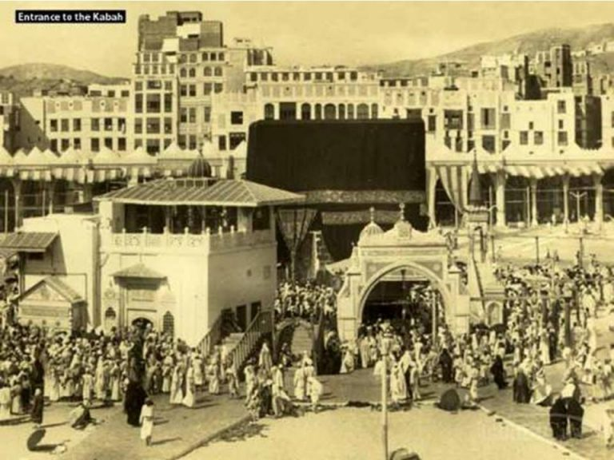
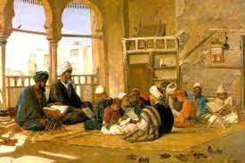
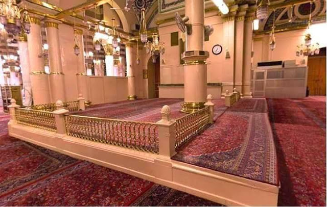
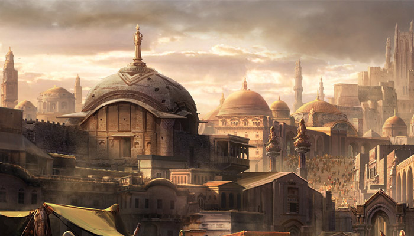

Lembaga pendidikan Islam dapat diartikan sebagai wadah atau tempat berlangsungnya proses belajar mengajar dalamm ruang lingkup keislaman. Pada awal penyebaran dan perkembangan agama Islam, Rasulullah SAW dalam mengajarkan al-Qur'an dan as-Sunnah kepada para masyarakat Mekkah dengan menggunakan serta membangun apa yang sekarang dikatakan lembaga pendidikan. Rasulullah SAW memiliki visi dan misi dalam mendirikan lembaga pendidikan pada kala itu, yaitu antara lain:
Selengkapnya untuk melihat visi misi lembaga pendidikan pada masa Rasulullah SAW, klik link di bawah!
Link ini
Dengan visi misi yang dimiliki Rasulullah SAW dalam mendirikan lembaga-lembaga pendidikan pada masanya seperti yang tertera sebelumnya, berkembanglah dengan pesat berbagai lembaga-lembaga pendidikan dan mulai dilangsungkan kegiatan belajar mengajar. Lembaga pendidikan pada masa Rasulullah SAW sedikitnya terdapat empat lembaga dalam mengajarkan Al-Qur'an, As-Sunah serta pelajaran lainnya antara lain:
1. Dar Al-Arqam
Lembaga pendidikan pertama dalam Islam adalah rumah. Pada fase Makkah Rasulullah SAW dan para sahabatnya menjalankan aktivitas pendidikan dan pembelajaran di rumah Arqam Ibn Abi Arqam. Rumah yang terpencil berada di atas bukit Safa, dipilih selain Arqam diusia 16 tahun sudah masuk Islam, juga agar para sahabat tidak mudah tercium oleh pembesar serta antek-antek Quraisy jahiliyah. Rasulullah SAW mengajarkan wahyu kepada para sahabatnya dengan sistem halaqoh. Rasulullah SAW dan para sahabatnya belajar dan mengajar di rumah tersebut selama 13 tahun. Krena itulah dinamai dengan Dar Al-Arqam karena proses pembelajarannya dilakukan dirumah Arqam Ibn Abi.
2. Kuttab
Pada masa Pra-Islam sudah mengenal lembaga pendidikan yang bernama kuttab. Secara Istilah, kuttab /maktab berarti tempat menulis, atau tempat di mana dilangsungkan kegiatan untuk baca-tulis dan syair-syair Arab. Mayoritas para sejarawan pendidikan Islam sepakat bahwa pendidikan Islam tingkat dasar yang mengajarkan membaca dan menulis bahasa Arab kemudian meningkat pada jenjang pengajaran al-Qur‟an dan pengetahuan dasar agama Islam. Namun Abdullah Fajar dalam bukunya Peradaban dan Pendidikan Islam berpendapat bahwa maktab adalah istilah untuk zaman klasik, sedangkan kuttab adalah istilah untuk zaman modern.
3. Al-Suffah
Al-Suffah merupakan ruang atau bangunan surau yang bersambung dengan masjid Nabawi. Kegiatan pengajaran dan pembelajaran agama Islam dilakukan secara teratur dan sistematik. Al-Suffah juga menjadi tempat tinggal bagi para sahabat Rasulullah SAW, bentuk Suffah adalah sebuah panggung luas beratapkan jerami, dimana mereka yang tinggal disini di sebut as-habul Suffah.
4. Masjid
Masjid pertama yang digunakan untuk kegiatan pendidikan adalah masjid Quba, di sana Rasulullah membentuk halaqoh yaitu para sahabat duduk di sekeliling Rasulullah dan mereka bertanya tentang berbagai masalah. Masjid dalam sejarah pendidikan Islam tidak hanya berfungsi sebagai tempat beribadah saja, tetapi juga berfungsi sebagai pusat pendidikan dan kebudayaan. Di masjid dilaksanakan berbagai proses pendidikan dan pembelajaran, dengan menggunakan model klasikal atau balaghoh.
Setelah berkembangnya lembaga pendidikan Islam di masa Rasulullah SAW dan berabad-abad telah berlalu, maka lembaga tersebut menjadi cikal bakal lahirnya lembaga-lembaga pendidikan Islam di Indonesia. Sampai sekarang terdapat tiga jenis lembaga pendidikan Islam di Indonesia yaitu lembaga pendidikan Islam formal, lembaga pendidikan Islam non formal dan lembaga pendidikan Islam informal. Berikut ini perbedaannya :
| Jenis Lembaga Pendidikan Islam | Perbedaan |
|---|---|
| Lembaga pendidikan Islam formal | Lembaga pendidikan Islam formal merupakan lembaga pendidikan yang terstruktur dan berjenjang, dimana lembaga tersebut terbagi atas pendidikan dasar, pendidikan menengah, dan pendidikan tinggi. Sesuai dengan Undang-undang nomor 23 tahun 2003 tentang Sistem Pendidikan Nasional. |
| Lembaga pendidikan Islam non formal | Menurut UU No 20 Tahun 2003 pendidikan non formal ialah jalur pendidikan yang tujuannya untuk mengganti, menambah dan melengkapi pendidikan formal. Pendidikan ini dapat diselenggarakan oleh lembaga khusus yang ditunjuk oleh pemerintah dengan berpedoman pada standar nasional pendidikan. Contoh dari pendidikan Islam non formal adalah Majelis Taklim. |
| Lembaga pendidikan Islam informal | Pendidikan informal dalam ruang lingkup pendidikan islam mempunyai keterkaitan erat dengan konsep keluarga sebagai sekolah pertama bagi setiap manusia. Hal tersebut manjadi sebuah konsep pendidikan yang tidak terpisahkan karena dalam islam pun dijelaskan bahwa sekolah pertama setiap manusia itu adalah keluarga dan guru pertama dalam kehidupan adalah orang tua. |